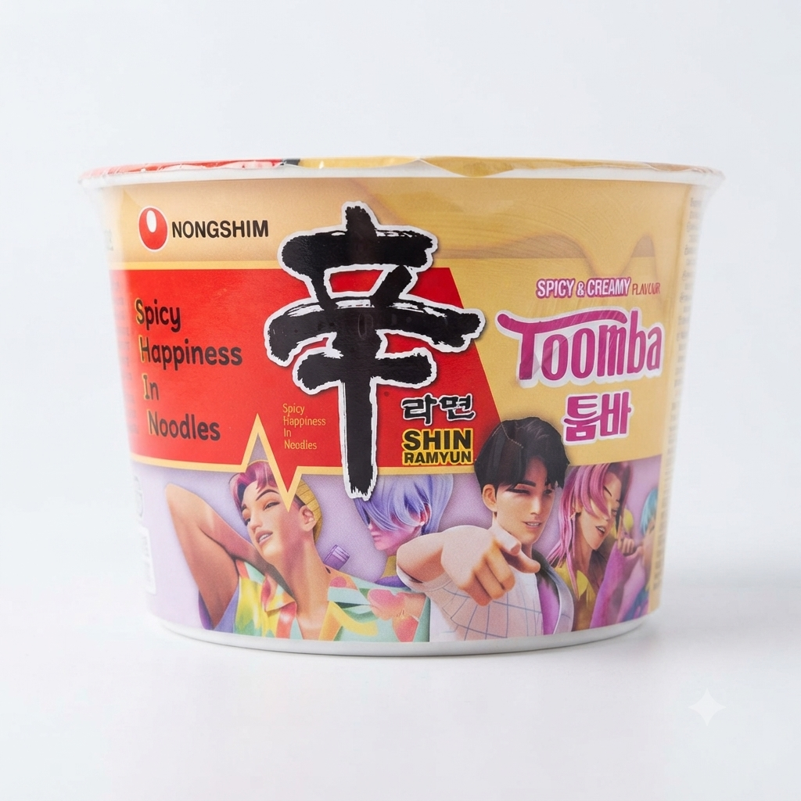
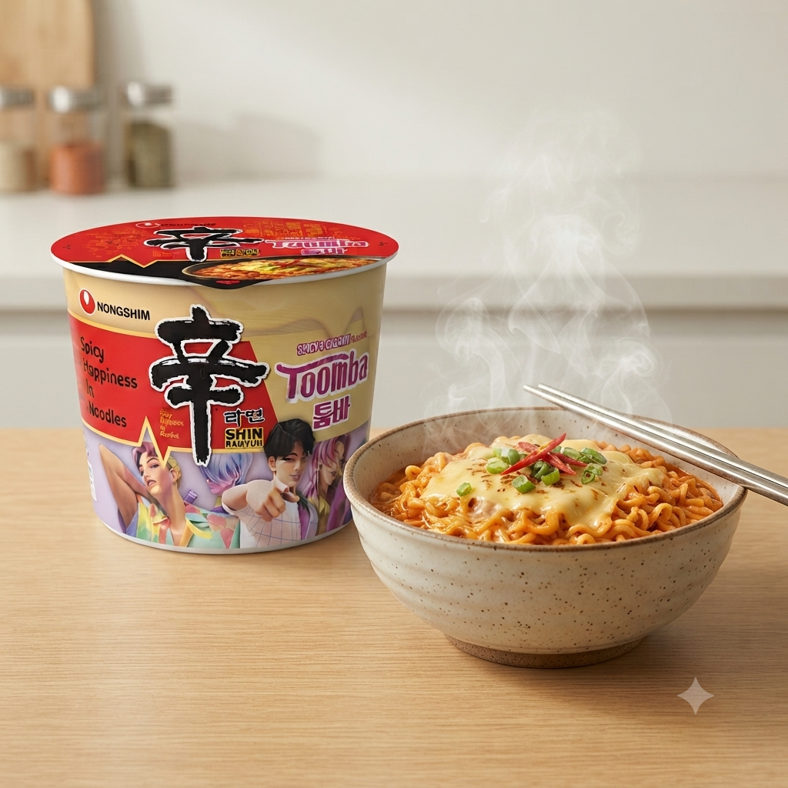

| Nongshim Shin Ramyun Spicy & Creamy, Ramen instant 113g Descopera o noua dimensiune a gustului cu Nongshim Shin Toomba Big Bowl. Aceasta editie speciala combina faimoasa iuțeala Shin Ramyun cu o aroma cremoasa si bogata, inspirata din bucataria italiana. Este o explozie de savoare asiatica, cu o textura catifelata, ideala pentru o masa rapida si satisfacatoare. |  |
 | Adu restaurantele coreene la tine acasa cu Nongshim Shin Toomba. Aceasta varianta delicioasa imbina taiteii gumosi cu sosul cremos si condimentat. Bolul generos este perfect pentru a potoli foamea, oferind o experienta culinara complexa, cu note picante si o cremozitate irezistibila, gata in doar cateva minute. |